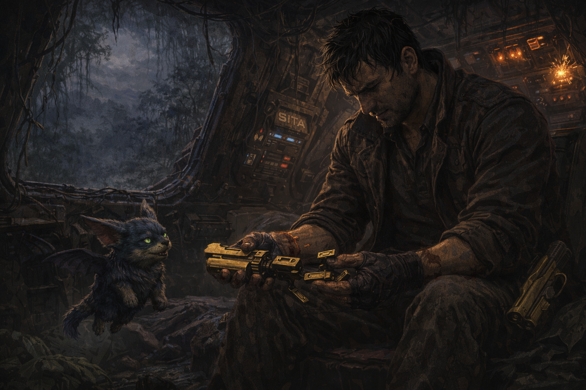

SITA estaba hundida hasta la mitad cuando Tony llegó al lago. Sus luces parpadeaban en señales de socorro que solo él sabía descifrar. Su voz llegaba entrecortada y débil entre los sistemas dañados.
Usó toda su fuerza sobrenatural para anclarla a las raíces de los árboles del borde del lago mientras KAWA volaba en círculos alertando de cualquier amenaza. Tardó días. Se cortó las manos con el metal retorcido del casco. Durmió dentro de SITA a medio reparar y comió lo que KAWA encontraba. Pero no se rindió. Cada pieza que reparaba sentía que también estaba reparando algo dentro de sí mismo.
Una noche sacó la Golden Gun y la miró por última vez. Era el último objeto que lo conectaba con los Oscuros, con esa noche, con la decisión que le costó a Elvira. La desactivó pieza por pieza con sus propias manos hasta que no fue más que metal frío e inerte. Pensó en Elvira con amor y con gratitud por todo lo que vivieron. La soltó no porque hubiera dejado de importarle sino porque la quería demasiado como para seguir cargando su recuerdo con dolor.
Detenerte y enfrentar lo que sientes